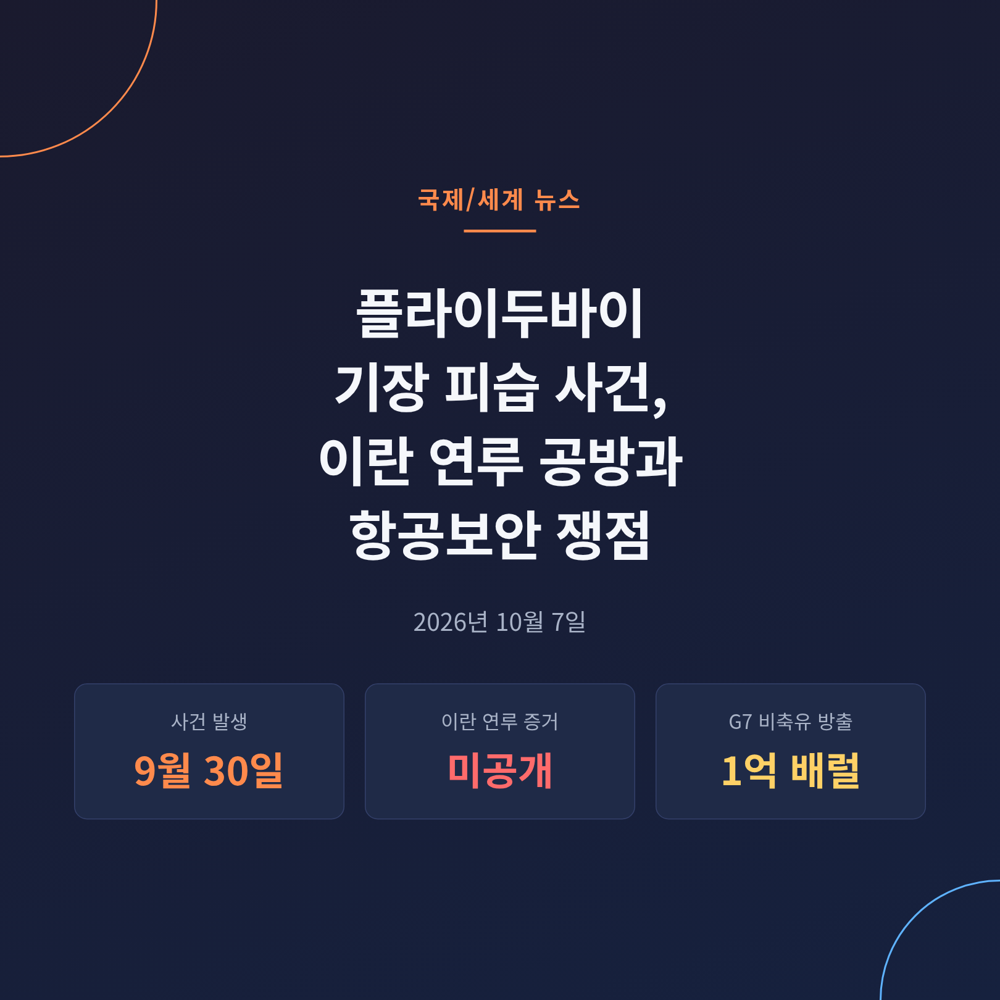
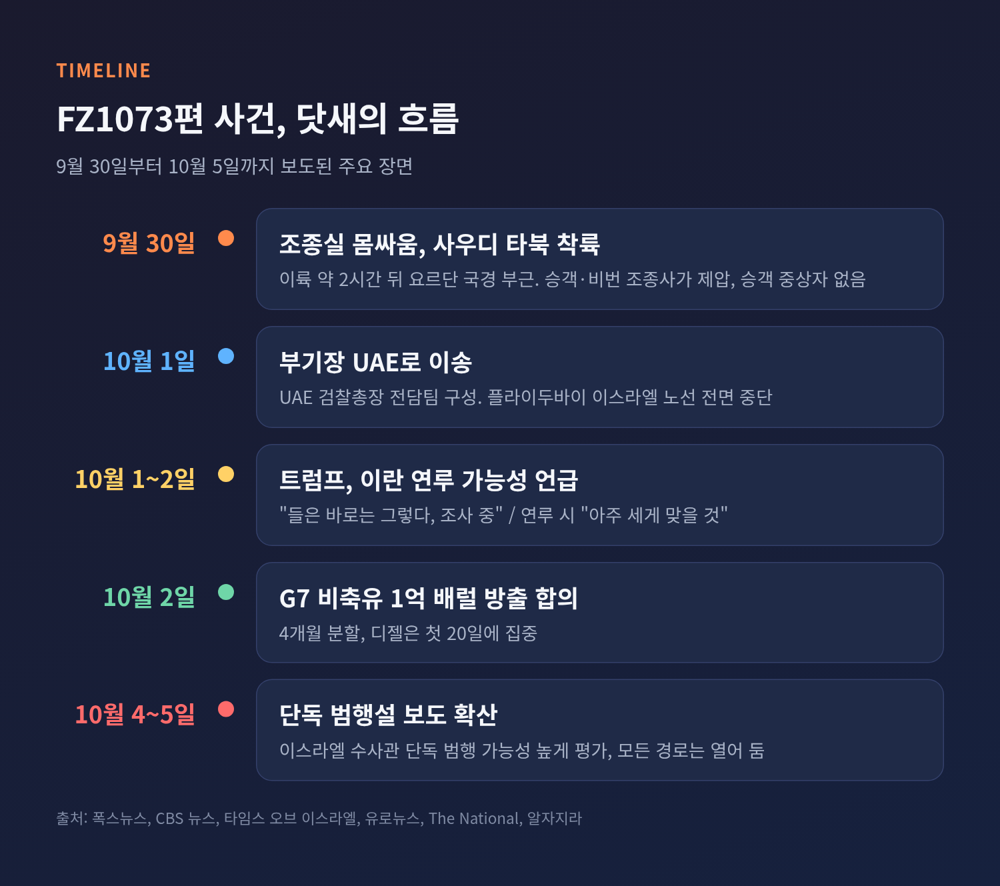
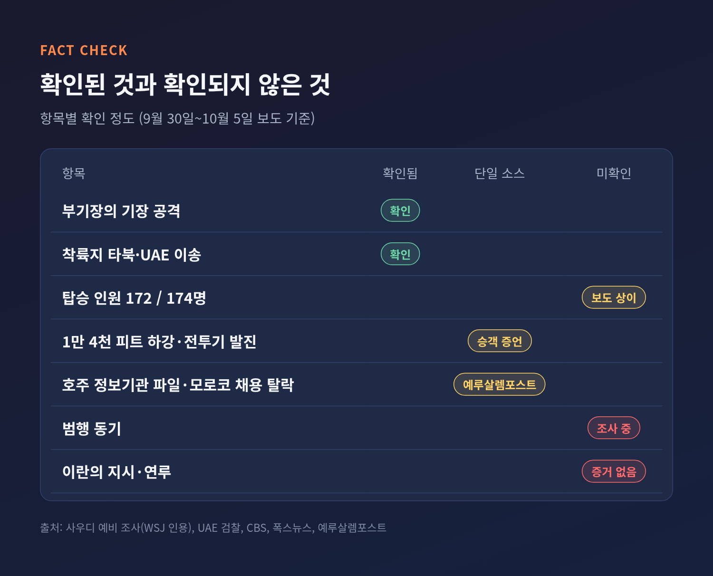
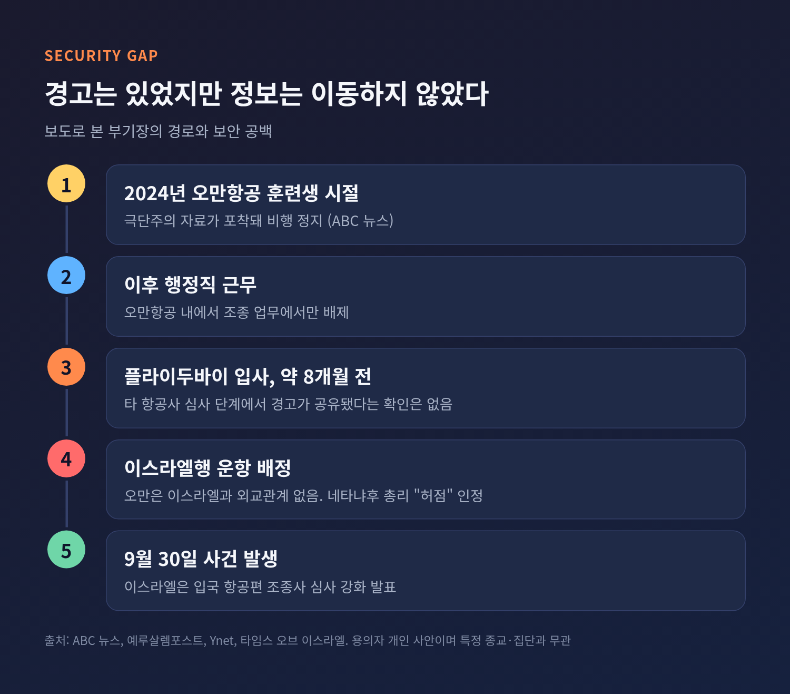
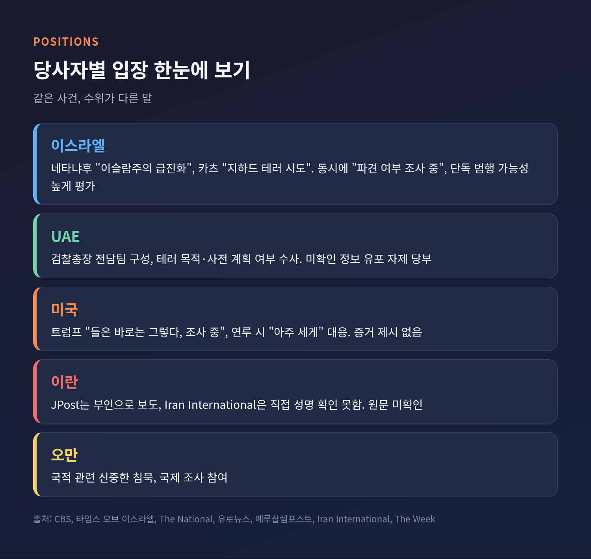

이번 글에서는 9월 30일 플라이두바이 FZ1073편에서 벌어진 조종실 피습 사건을 정리해 보겠습니다. 확인된 사실과 아직 확인되지 않은 대목을 나누고, 이란 연루를 둘러싼 각국 입장과 항공보안·유가에 미치는 영향까지 차례로 살핍니다.
3줄 요약
2026년 9월 30일(수) 플라이두바이 FZ1073편이 두바이에서 텔아비브로 향했습니다. 보잉 737 MAX였고, 탑승자는 보도에 따라 172명 또는 174명으로 갈립니다. 이륙 약 2시간 뒤 요르단 국경 부근에서 조종실 몸싸움이 벌어졌습니다.
CBS 뉴스에 따르면 오만 국적 부기장 하맘 알 하마미가 비상용 도끼로 기장을 찌르고 항공기를 추락시키려 했다는 혐의를 받습니다. 기장은 인도 국적 스미트 마치하르(39)입니다. 타임스 오브 이스라엘은 중상을 입은 기장이 마지막 힘으로 조종실 문을 열어 승객의 개입을 도왔다고 전했습니다.
이스라엘인 승객들과 승무원, 비번 조종사 2명이 부기장을 제압하고 조종을 되찾았습니다. 항공기는 이스라엘에서 약 400마일 떨어진 사우디 타북에 비상착륙했습니다. 승객 중 중상자는 없었고 승무원 2명이 입원했습니다.
부기장은 사우디에 구금됐다가 10월 1일 UAE로 이송됐습니다. 기장도 치료를 위해 UAE로 옮겨졌습니다. 플라이두바이는 이스라엘 노선을 전면 중단했습니다.

속보 국면에서는 정보가 뒤섞이기 마련입니다. 매체마다 다르게 적은 대목이 실제로 있습니다.
먼저 확인된 사실입니다. 부기장이 기장을 공격했다는 점은 사우디의 예비 조사와 UAE 당국 발표가 일치합니다. 착륙지가 타북이라는 점, 부기장이 10월 1일 UAE로 넘겨졌다는 점도 여러 매체가 같습니다. UAE 검찰은 전담팀을 꾸려 수사에 들어갔습니다.
다음은 확인이 덜 된 대목입니다.
가장 중요한 미확인 사항은 동기입니다. 월스트리트저널을 인용한 보도에 따르면 사우디 조사는 동기를 밝히지 못했습니다. 이란과의 연결고리도 공개된 증거가 없습니다.

이 사건이 무게를 갖는 이유는 경고 신호가 앞서 있었다는 점입니다. ABC 뉴스는 이 부기장이 2024년 오만항공 훈련생 시절 극단주의 자료가 포착돼 비행 정지를 당했고, 이후 행정직에서 일했다고 전했습니다. 그가 플라이두바이에 입사한 것은 약 8개월 전이라고 합니다.
예루살렘포스트는 이를 두고 "누군가 오만에서 우려를 적어 두었지만 정보가 이동하지 않았다"고 짚었습니다. 개인의 일탈보다 정보가 공유되지 않은 체계의 문제를 먼저 보자는 지적입니다.
여기서 한 가지 선을 긋겠습니다. 사건의 용의자는 한 명의 개인입니다. 동료가 "기도를 많이 했다"고 증언했다는 보도가 있으나, 이는 개인에 대한 일화일 뿐 특정 종교나 집단 전체로 확장할 근거가 아닙니다.
항공보안 전문가들의 진단은 이렇습니다. 에얄 훌라타 전 이스라엘 국가안보보좌관은 보안이 승객과 수하물에 집중돼 왔다고 말했습니다. 필립 바움 코벤트리대 교수는 9·11 이후 강화된 조종실 문이 "선한 사람이 들어갈 수 없는 요새"를 만들었다고 했습니다. 외부 위협을 막는 장치가 내부 위협에는 오히려 취약해진다는 뜻입니다.
예전엔 승객 검색이 보안의 중심이었습니다. 지금은 조종석에 앉는 사람 자체가 검증 대상이 됐습니다. 이스라엘은 입국 항공편 조종사 심사와 신원 확인을 강화하겠다고 밝혔습니다. 다만 국제민간항공기구(ICAO)가 정한 기준은 국가별 협조 의무가 비교적 느슨해, 일국의 조치가 얼마나 퍼질지는 미지수입니다.

이스라엘: 네타냐후 총리는 부기장이 "이슬람주의 급진화를 겪었다"고 말했고, 벤구리온 공항을 노렸다고 주장했습니다. 카츠 국방장관은 "지하드 테러 시도"라고 불렀습니다. 한편 네타냐후 총리는 "누가 보냈는지 조사 중"이라며 자살 시도에 가깝다는 시각도 내비쳤습니다. 오만과 외교관계가 없는데도 오만 조종사가 운항한 "허점"은 인정했습니다.
UAE: 샴시 검찰총장은 "테러 활동이나 목적, 사전 계획·지시"가 있었는지 보겠다고 밝혔습니다. 미확인 정보의 유포를 삼가 달라고도 당부했습니다. 이스라엘 매체 Ynet은 UAE가 이스라엘의 성급한 테러 결론에 불만을 전했다고 보도했습니다. 반면 폭스뉴스는 UAE 고위 관리가 "위험하고 파국적일 수 있는 테러 행위"라고 표현했다고 전했습니다. 수위가 일관되지 않아 보입니다.
미국: 트럼프 대통령은 이란이 연루됐느냐는 질문에 "들은 바로는 그렇다고 하겠지만 지금 조사 중"이라고 답했습니다. 연루가 드러나면 "아주 세게 맞을 것"이라고도 했습니다. 증거는 제시하지 않았습니다.
이란: 예루살렘포스트는 이란이 연루를 부인했다고 적었습니다. 다만 Iran International은 이란 당국의 직접 반응을 문서로 확인하지 못했다고 밝혔습니다. 부인 성명의 원문은 필자도 찾지 못했습니다.
오만: 부기장의 국적에 관해 "신중한 침묵"을 유지하며 국제 조사에는 참여하고 있습니다.
CBS는 이스라엘 수사관들이 단독 범행 가능성이 높다고 본다고 전했습니다. 다만 "모든 경로가 열려 있다"는 단서가 붙어 있습니다.

트럼프 대통령은 이 발언을 한 자리에서 이란과의 전쟁이 6개월을 넘겼고 미군 18명이 숨졌다고 말했습니다. 전쟁은 "곧" 끝날 것이며 선거 이후일 수도 있고, 그 뒤 유가가 내릴 것이라는 전망도 덧붙였습니다. 이란 인플레이션이 310%라는 주장도 했지만, 독립적으로 검증된 수치는 아닙니다.
시장은 이 사건보다 공급 쪽을 봅니다. G7은 10월 2일 원유와 디젤 1억 배럴을 4개월에 걸쳐 방출하기로 했고, 디젤 상당량은 첫 20일 안에 풀립니다. 발표 직후 브렌트유는 한때 100달러 아래로 내려갔다가 저녁에 약 102달러로 돌아왔습니다. 10월 5일에는 브렌트 101.69달러, WTI 90.16달러였습니다. 미국 디젤은 갤런당 6.50달러로 사상 최고였습니다.
전문가들은 신중합니다. 캐피털이코노믹스의 해밋 후세인은 하방 압력은 있으나 효과가 "단명"할 것이라고 봤습니다. 전 IEA 분석가 닐 앳킨슨은 "근본 문제인 공급 부족을 해결하지 못한다"고 말했습니다. 반면 걸프 원유 유조선 흐름은 9월 말 일평균 1,350만 배럴까지 회복했습니다.
플라이두바이 사건이 유가를 직접 움직였다는 근거는 보도에서 찾지 못했습니다. 다만 이란 성직자가 수출과 항공이 제한되면 지역 공항과 유조선이 차질을 겪을 수 있다고 위협했고, 10월 2일에는 호르무즈 해협에서 유조선이 또 피격됐습니다. 사건이 이란 연루로 번질 경우 위험 프리미엄이 붙을 수 있다는 점은 변수로 남습니다.
앞으로 살필 대목은 세 가지입니다.
첫째, UAE 수사 결과입니다. 사전 계획이나 지시가 있었는지가 이란 연루 논쟁의 갈림길입니다. 아무 증거가 나오지 않는다면 트럼프 대통령의 경고는 근거 없는 압박이었다는 평가를 받을 수 있습니다. 반대로 증거가 나온다면 확전 부담이 커집니다.
둘째, 항공 보안 제도입니다. 오만항공이 가진 정보가 왜 다른 항공사에 닿지 않았는지가 핵심입니다. 승무원 신원 정보를 국가 간에 공유하는 틀이 만들어질지 지켜볼 만합니다. 이스라엘 Arkia와 El Al은 두바이 노선을 수주 안에 재개할 계획이지만 보안 승인이 조건입니다.
셋째, 중동 정세와 유가입니다. 아브라함 협정 관계에 균열이 생기는지, 호르무즈 사고가 이어지는지가 시장을 흔들 것입니다.
정리하면 이렇습니다.
지금까지 확인된 것은 한 조종실에서 벌어진 폭력과, 그것을 막아낸 승객들의 용기입니다. 이란이라는 이름은 아직 증거 없이 정치의 언어에만 올라 있습니다.
"확인되지 않은 것을 확인된 것처럼 말하지 않는 일"이 이런 사건에서 가장 먼저 지켜야 할 원칙이라고 생각합니다. 조사가 끝날 때까지 결론은 잠시 비워 두는 편이 낫겠습니다.
참고한 보도: 폭스뉴스(9/30, 10/2), CBS 뉴스(10/4, 10/5), 타임스 오브 이스라엘(9/30), 유로뉴스(10/2), IranWire(10/1~2), ABC 뉴스(10/2, 10/5), The National(10/1), 예루살렘포스트(10/4), The Week(10/2), Ynet(10/1), Iran International(10/1), Yahoo Finance(10/5), 알자지라(10/3), CNBC(10/5)